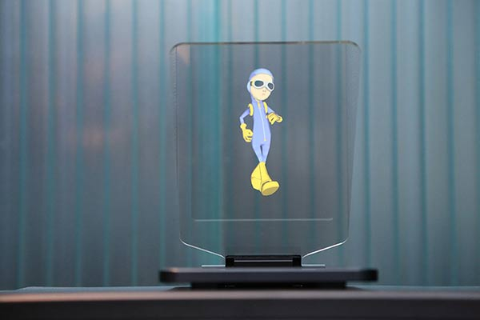
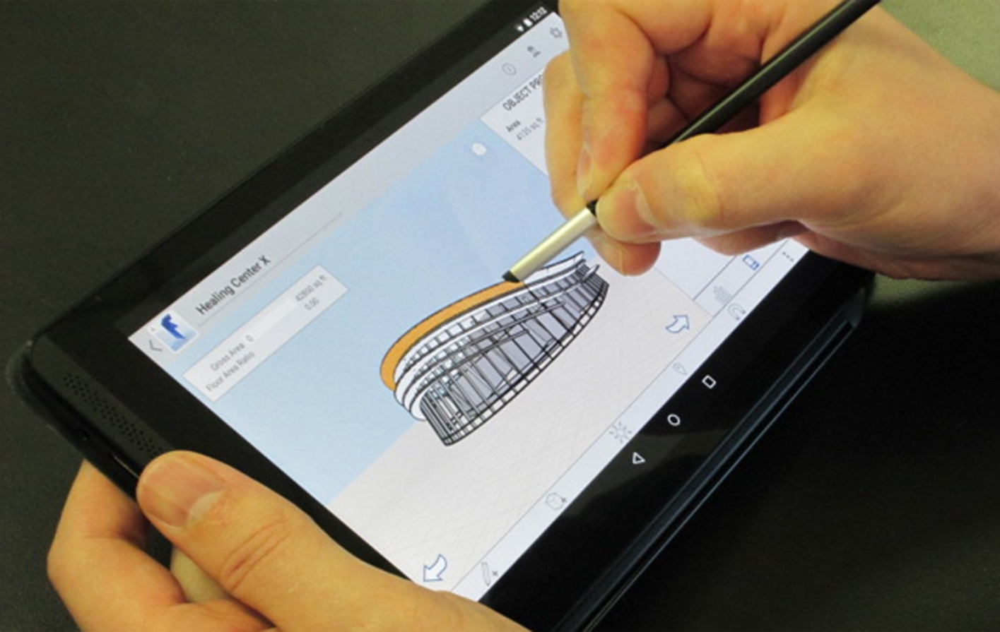

looking forward
 
The technological advancements undergone have showed the direction that digital drawing is headed for. More and more tablets include less wires and the increase in wireless stylus demonstrate the need for more portable devices. In the future, digital drawing tablets will become even more travel-friendly and will most likely include more navigation buttons directly on the tablet. The usability of tablets should also become more straight-forward, and should adapt to the complaint that getting used to digital drawing takes some time and practie.
Holograms are always associated with daydreams of the future, and digital drawing is not exempt from that. This feature for drawing would be especially helpful for architecture and product design, becuase a designer could easily produce a 3D model to present to their company. It would also be very helpful in the animation industry. Digital drawing will only continue to improve, and it appeals to a wide audience, not only of professional designers, but also to children with an interest in drawing and design. The tools are endless and the future of digital drawing seems very bright.